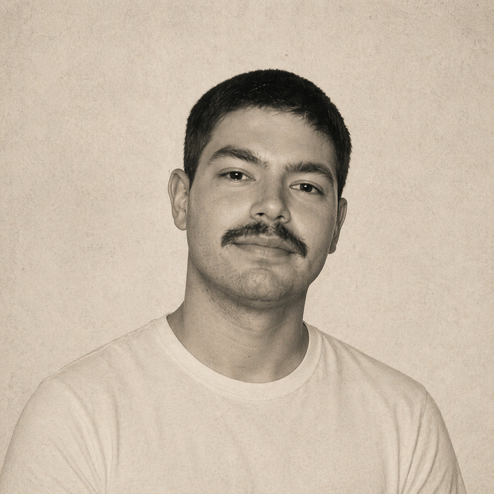

Psicólogo em Brasília · DF
Acolhimento, escuta qualificada e cuidado psicológico em Brasília e online para todo o Brasil — com Gestalt-Terapia e TCC para promover bem-estar, autoconhecimento e relacionamentos mais saudáveis.

Lucas Gomes FariaSobre mim
Sou psicólogo em Brasília (CRP 01/25153), especializado em Gestalt-Terapia, Psicopedagogia e Avaliação Psicológica — e atuo desde 2022. Realizo atendimentos presenciais e online (atendimento remoto) para adolescentes e adultos em todo o Brasil.
Meu trabalho é centrado no cuidado e na escuta sensível da experiência de cada pessoa. Acredito num espaço ético, acolhedor e comprometido com sua história.
Uma abordagem humanista que foca na experiência presente, na tomada de consciência e na relação entre pessoa e contexto. Valoriza sua história, seus sentimentos e sua capacidade de crescer com autenticidade.
Embora minha prática clínica esteja principalmente ancorada na Gestalt-Terapia, também integro técnicas da Terapia Cognitivo-Comportamental quando elas podem contribuir para o processo terapêutico. Esses recursos são utilizados de forma pontual e cuidadosa, auxiliando na identificação de pensamentos, emoções, comportamentos e padrões de funcionamento, sempre respeitando a singularidade de cada pessoa e o sentido da experiência vivida no aqui e agora.
Como posso te ajudar
Cada processo é único. Ofereço diferentes modalidades para que você encontre o cuidado mais adequado para o seu momento.
Psicoterapia com escuta qualificada e presença — um espaço só para você falar, refletir e encontrar novos caminhos com apoio ético e cuidadoso.
Individual ou em grupo, o Role Playing Game Terapêutico utiliza o jogo narrativo como recurso clínico para explorar emoções, comportamentos e relações de forma lúdica e significativa.
Processo de avaliação para apoiar a escolha de área de atuação e carreira, integrando autoconhecimento, mapeamento de habilidades e interesses.
Avaliação psicológica criteriosa para pacientes em processo de indicação para cirurgia bariátrica, atendendo às exigências clínicas e éticas do procedimento.
O processo
Três passos simples para começar sua jornada de autoconhecimento.
Entre em contato pelo WhatsApp e escolha o melhor dia e horário para você.
Nos conhecemos, você compartilha suas demandas e expectativas num espaço seguro.
Construímos juntos um caminho de cuidado, consciência e transformação.
Como Gestalt-Terapeuta, compreendo a psicoterapia como um convite para tornar-se mais consciente de si, da relação com o outro e da forma como se está no mundo.
— Lucas Gomes Faria, Psicólogo
Dúvidas frequentes
Algumas das questões mais comuns sobre psicoterapia e como funciona o atendimento.
A psicoterapia é um espaço de escuta, acolhimento e reflexão sobre questões emocionais, relacionais e existenciais. Ao longo do processo, buscamos compreender como você tem vivido determinadas situações, quais sentidos elas têm na sua história e quais possibilidades podem ser construídas a partir disso.
O atendimento é voltado para adolescentes e adultos que estejam passando por dificuldades emocionais, conflitos relacionais, inseguranças, ansiedade, sofrimento psíquico, momentos de mudança ou que desejem se conhecer melhor.
Minha principal abordagem é a Gestalt-Terapia, uma perspectiva que valoriza a experiência presente, a consciência de si, a relação com o outro e a forma como cada pessoa constrói seus modos de lidar com a vida. Também utilizo recursos técnicos de outras abordagens, como a Teoria Cognitivo-Comportamental (TCC) quando isso contribui para o processo terapêutico.
Sim. O atendimento com adolescentes considera suas demandas emocionais, familiares, escolares e sociais, respeitando sua singularidade e seu momento de desenvolvimento. Quando necessário, também há diálogo com os responsáveis, sempre preservando o sigilo e os limites éticos do atendimento.
Sim. O atendimento com adultos pode envolver questões relacionadas a ansiedade, autoestima, relações familiares e afetivas, trabalho, tomada de decisões, autoconhecimento, conflitos internos e outros sofrimentos que atravessam a vida cotidiana.
O atendimento pode ser realizado de forma online ou presencial, conforme disponibilidade e necessidade do paciente. A modalidade online mantém os mesmos princípios éticos, técnicos e de sigilo do atendimento presencial.
A primeira sessão é um momento de acolhimento e compreensão inicial da demanda. Conversamos sobre o que levou você a buscar psicoterapia, sua história, suas expectativas e as possibilidades de trabalho terapêutico. E isso já é o início do processo.
As sessões geralmente têm duração aproximada de 50 minutos.
Na maioria dos casos, as sessões acontecem semanalmente. Essa frequência pode ser conversada de acordo com a demanda, disponibilidade e necessidade do processo terapêutico. Tudo isso é combinado na primeira sessão.
Não. A psicoterapia pode ser buscada em momentos de crise, mas também pode ser um espaço de autoconhecimento, elaboração de experiências, cuidado emocional e desenvolvimento de formas mais saudáveis de se relacionar consigo mesmo, com os outros e com o mundo.
Você não precisa chegar com tudo organizado. A sessão é justamente um espaço para construir sentido sobre aquilo que está sendo vivido. Às vezes, a pessoa chega com uma questão clara. Em outros momentos, chega apenas com um incômodo, uma sensação ou uma vontade de se compreender melhor.
Sim. O sigilo profissional é um princípio fundamental da Psicologia. As informações compartilhadas em sessão são preservadas conforme as normas éticas da profissão, com exceções apenas nos casos previstos pelo Código de Ética e pelas legislações aplicáveis.
Não. Psicólogos não prescrevem medicamentos. Quando necessário, pode ser indicado que o cliente também busque avaliação com médico psiquiatra, mantendo cada profissional sua função específica no cuidado.
O agendamento é feito pelo WhatsApp: (61) 98167-6377. Entre em contato, apresente-se e me diga um pouco sobre o que está buscando. Combinamos um horário inicial para que possamos nos conhecer.
Os valores são combinados diretamente via WhatsApp. No momento, não trabalho com convênios. Caso tenha interesse, entre em contato para conversarmos sobre as possibilidades.
Meu registro profissional é CRP 01/25153.
Tem alguma outra dúvida? Estou à disposição.
Falar no WhatsAppVamos conversar
Entre em contato para agendar sua sessão. Atendo presencialmente em Brasília/DF e online para todo o Brasil.
Falar no WhatsApp